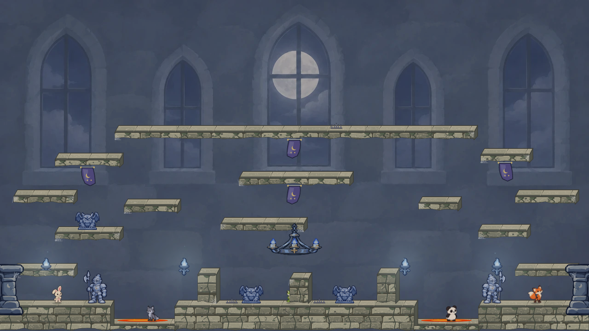
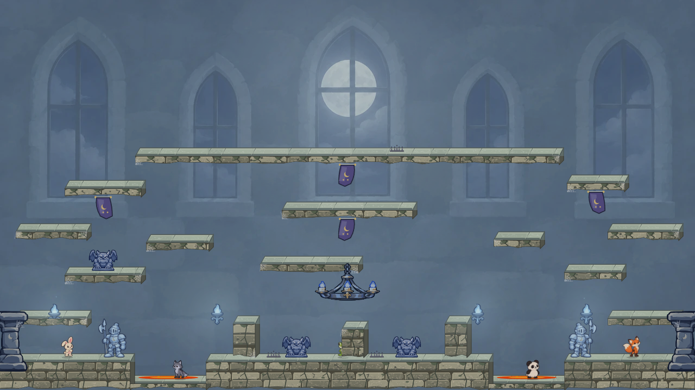
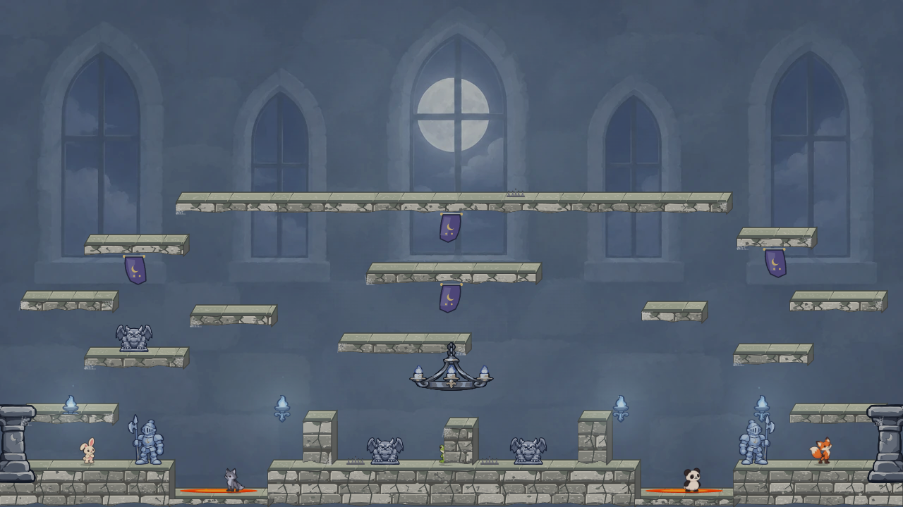
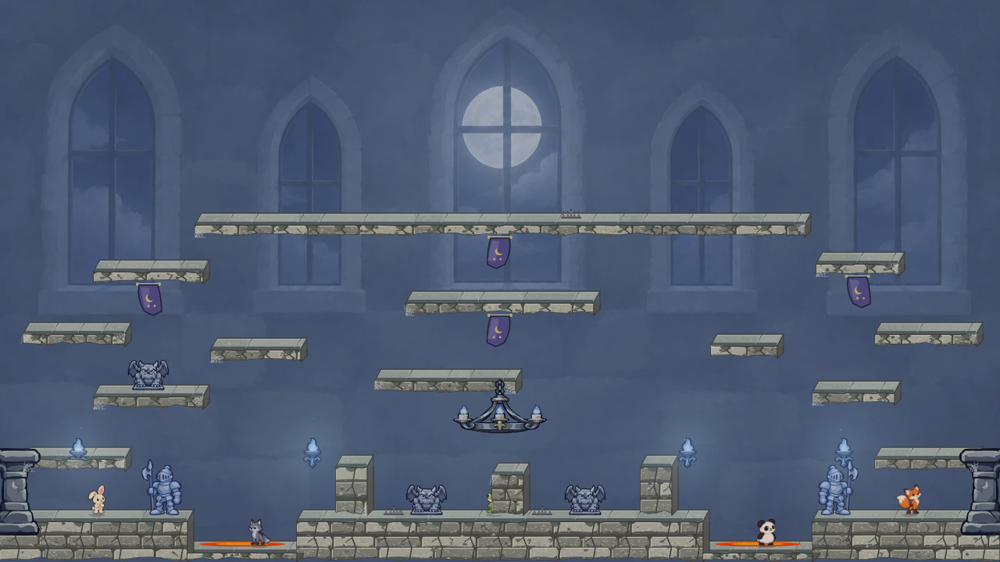
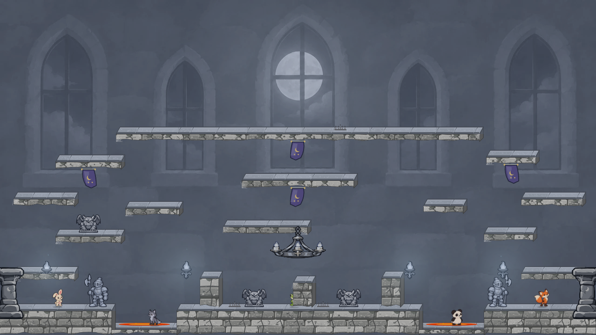
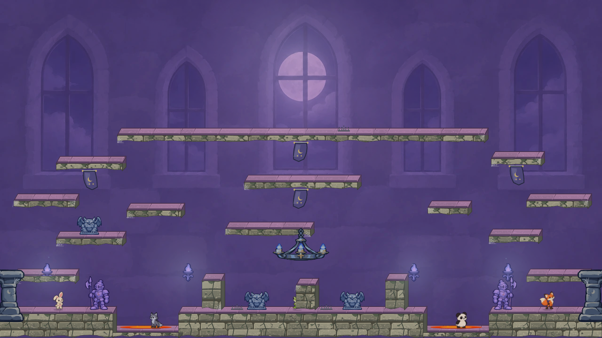
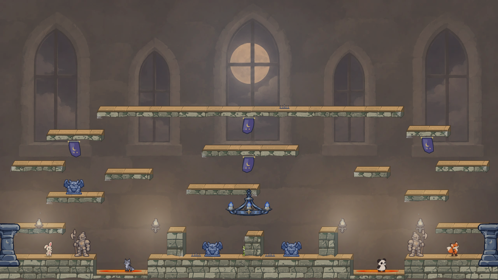

Current

Quiet baseline, with a narrow background value range.
Matched 1280 × 720 scenes. The Silver Moon follow-up grades platform faces and Castle props with the room. Character sprites keep their original colors for gameplay contrast.

Quiet baseline, with a narrow background value range.

Too pale; foreground Castle materials remain blue.

Recommended: less pale, with the Guardian and platform faces graded together.

Deeper blue night shadows and a cool moon focus.

More neutral stone and props; less blue Castle identity.

Theatrical violet shadow; banners and platform tops compete more.

Warm wall and lamp pools; would require coordinated flame colors.